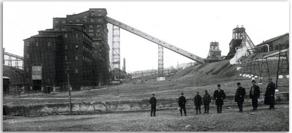

Once a flourishing community...
Now abandoned for nearly a century.
In the early 1900s, the Delaware, Lackawanna, and Western Railroad was a prominent industry in northeastern Pennsylvania, and its Truesdale Colliery, outside of Nanticoke in the heart of the anthracite coal fields, was setting records for productivity.
A few privileged Truesdale employees were made part of an experiment in company housing — homes made entirely of concrete. It was exactly the kind of innovation that abounded during the ongoing Industrial Revolution.
Comprised of 20 identical two-story, two-family homes, this unique community prospered for several years. Children enjoyed the playground and wading pool, and the adults participated in gardening contests to show off their well-manicured lawns. In fact, the neighborhood earned the name, “the garden city.” But there were design flaws that couldn't be ignored...
Within a few years after they were built, the houses began to deteriorate. Plaster and paint began to peel. The buildings were so cold inside, residents' laundry used to freeze in the closets.
The numerous issues began to add up. Ultimately, the property owners considered the cost of installing a necessary sewage system too high, so residents were forced to vacate their homes. A demolition attempt failed when 100 sticks of dynamite did little damage to one of the houses. In 1924, the buildings were simply abandoned.
In 1998, the Pennsylvania Historical and Museum Commission marked the site of Concrete City with one of Pennsylvania's "blue signs," which denote a place that is being preserved for historical significance.
Of course, that hasn't stopped locals from using the site as a paintball playground.
The concrete structures, now tagged with graffiti, are decaying, some sinking into the ground noticeably. This “garden city,” much like the coal mining industry it served, has crumbled. It stands as an empty shell, merely a ghost of the distant past.